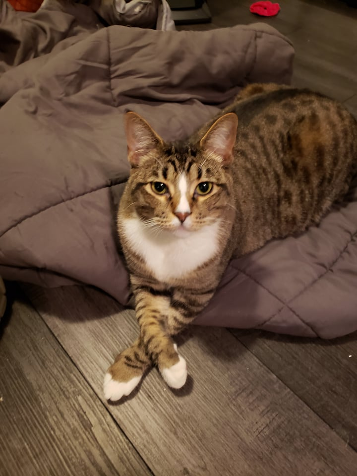
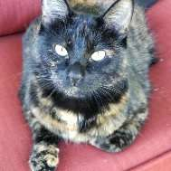

About Me
Hello! My name is Eden!
I am trained as a microbiologist, and my ultimate goal in life is to use technology and science together to progress medicine.
I love the smaller things in life, going out for a walk, sitting on discord and talking with my friends, spending time with my partner and my furbabies.
I'm very excited to learn software development, starting with HTML/CSS/Javascript with the eventual goal of learning Python.
My cat family
Here are some picture of my two fur babies, they mean the world to me!
Monterey Jack The Third
Pumpkin Pie McSassypants
Video Games
I have a few hobbies, I love art, drawing, painting, crochet, any craft of any sort will hold my interest!
I also love cooking, I love to find recipes and make them my own, cooking in itself can be an artform for me.
However I spend most of my time playing video games with my friends, in particular FFXIV(Final Fantasy 14 MMO by SquareEnix) takes most of my free time.
My main friend group are the Peppers! There are many of us but here is a lovely picture of three of us.